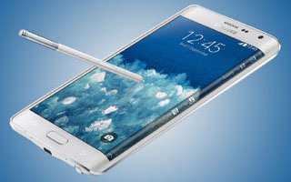

SAMSUNG NOTE EDGE
 The Note Edge is a beautiful looking device that has a screen that folds over one side of the handset, offering up myriad possibilities with what to do with this extra bit or real estate.Well, I say extra - this is the same 5.7-inch screen that's seen on the Note but an inch of it drapes over the side, ready to take care of notifications so they don't get in the way of watching full-screen video and the like.